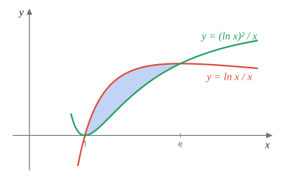
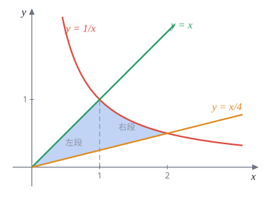
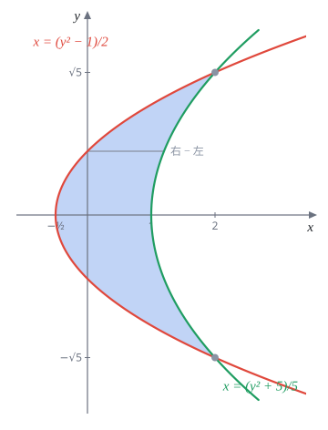
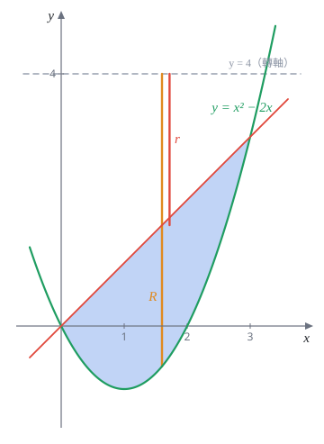
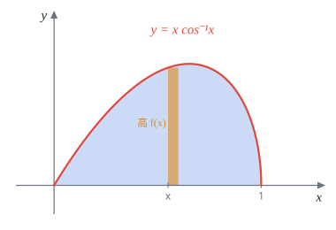
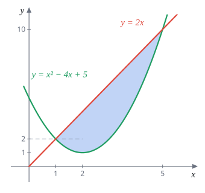

Week 12 積分的應用：面積、三角積分、體積
AP Calculus I（115 學年）Lecture Note 12 教學與題解
講義筆誤p.101（§12.3.1 Exercise）：$x=y^3$ 與 $x=4y$ 圍成的區域繞 $x$ 軸，體積應為 $\frac{256\pi}{15}$（只算第一象限那塊是 $\frac{128\pi}{15}$），不是 $\frac{512\pi}{21}$。用圓盤法與殼層法兩種方法算都一致。見題 18。
前兩週學了積分怎麼算（查表、FTC、變數變換），這週拿它來做事。主角只有一個想法：切成細條、每條近似、加起來取極限。切的是長方形就得到面積，切的是薄圓片就得到體積。中間插一段三角函數乘積的積分，因為算體積時常會碰到。
12.1 兩曲線所夾的面積
上週算的 $\int_a^bf(x)\,dx$ 是曲線和 $x$ 軸之間的有號面積。換成兩條曲線夾的面積，只要把「到 $x$ 軸的高度」換成「上面減下面」：
對 $x$ 積分若在 $[a,b]$ 上 $f(x)\ge g(x)$，$y=f(x)$ 與 $y=g(x)$ 之間的面積為
$$A=\int_a^b\big[f(x)-g(x)\big]\,dx\qquad(\text{上}-\text{下}).$$對 $y$ 積分若在 $[c,d]$ 上 $f(y)\ge g(y)$，$x=f(y)$ 與 $x=g(y)$ 之間的面積為
$$A=\int_c^d\big[f(y)-g(y)\big]\,dy\qquad(\text{右}-\text{左}).$$直切（$dx$）時每條長方形的高是上減下；橫切（$dy$）時每條的寬是右減左。曲線寫成 $x=\dots$ 的形式（像橫躺的拋物線），或直切時上下邊界中途換人，就改成橫切。
解題套路① 畫圖，解交點定上下限。② 決定直切或橫切：哪個方向的邊界不換人就切哪個方向。③ 在區間裡隨便代一點，確認誰在上（右）。④ 兩曲線在區間內交叉時要分段，否則正負相消。
題 1求 $y=\dfrac{\ln x}x$ 與 $y=\dfrac{(\ln x)^2}x$ 所圍的面積。
交點：$\ln x=(\ln x)^2$，即 $\ln x(1-\ln x)=0$，$x=1$ 或 $x=e$。在 $(1,e)$ 裡 $0\lt\ln x\lt1$，所以 $\ln x\gt(\ln x)^2$，前者在上。

令 $u=\ln x$，$du=\frac{dx}x$，上下限 $0\to1$：
$$A=\int_0^1(u-u^2)\,du=\frac12-\frac13=\frac16.$$$\dfrac16$
題 2求 $y=\dfrac1x$、$y=x$、$y=\dfrac14x$（$x\gt0$）所圍的面積。
三個交點：$x=\frac1x\Rightarrow(1,1)$；$\frac x4=\frac1x\Rightarrow(2,\frac12)$；兩直線交於原點。

直切時下邊界一直是 $y=\frac x4$，上邊界在 $x=1$ 從 $y=x$ 換成 $y=\frac1x$，所以分兩段：
$$A=\int_0^1\left(x-\frac x4\right)dx+\int_1^2\left(\frac1x-\frac x4\right)dx=\frac38+\left(\ln2-\frac38\right)=\ln2.$$$\ln2$
題 3求 $y^2=2x+1$ 與 $y^2=5x-5$ 所圍的面積。
兩條都是向右開的拋物線，寫成 $x$ 的函數：$x=\frac{y^2-1}2$、$x=\frac{y^2+5}5$。直切的話上下邊界都要開根號還要分段，橫切乾淨得多。
交點：$\frac{y^2-1}2=\frac{y^2+5}5\Rightarrow5y^2-5=2y^2+10\Rightarrow y=\pm\sqrt5$。代 $y=0$：左式 $-\frac12$、右式 $1$，所以 $x=\frac{y^2+5}5$ 在右。

被積函數是偶函數，取兩倍的 $[0,\sqrt5]$：$2\cdot\frac1{10}\left[15y-y^3\right]_0^{\sqrt5}=\frac15(15\sqrt5-5\sqrt5)=2\sqrt5$。
$2\sqrt5$
題 4求 $y=3x^3-x^2-10x$ 與 $y=-x^2+2x$ 所圍的面積。（講義答案：$24$）
相減：$(3x^3-x^2-10x)-(-x^2+2x)=3x^3-12x=3x(x-2)(x+2)$，交點 $x=-2,0,2$。
$3x^3-12x$ 在 $(-2,0)$ 為正、在 $(0,2)$ 為負，上下對調，要分段取絕對值。它是奇函數，兩段面積相等：
$$A=\int_{-2}^0(3x^3-12x)\,dx+\int_0^2(12x-3x^3)\,dx=2\left[6x^2-\frac34x^4\right]_0^2=2(24-12)=24.$$直接算 $\int_{-2}^2(3x^3-12x)\,dx$ 會得到 $0$，這就是沒分段的下場。
$24$
題 5求 $y=x+1$、$y=xe^{-x^2}$、$x=2$ 與 $y$ 軸所圍的面積。（講義答案：$\frac72+\frac{e^{-4}}2$）
$y$ 軸是 $x=0$，所以範圍 $[0,2]$。比大小：$e^{-x^2}\le1$，所以 $xe^{-x^2}\le x\lt x+1$，直線在上。
$$A=\int_0^2\left(x+1-xe^{-x^2}\right)dx=\left[\frac{x^2}2+x\right]_0^2-\int_0^2xe^{-x^2}\,dx.$$第二項令 $u=-x^2$，$du=-2x\,dx$：$\int_0^2xe^{-x^2}dx=\left[-\frac12e^{-x^2}\right]_0^2=\frac12-\frac12e^{-4}$。
$$A=4-\frac12+\frac12e^{-4}=\frac72+\frac{e^{-4}}2.$$$\dfrac72+\dfrac{e^{-4}}2$
題 6求 $x=\frac12y^2-3$ 與 $y=x-1$ 所圍的面積。（講義答案：$18$）
拋物線是 $x=\dots$ 的形式，橫切。直線改寫成 $x=y+1$。交點：$\frac12y^2-3=y+1\Rightarrow y^2-2y-8=0\Rightarrow y=-2,4$。代 $y=0$：直線 $x=1$，拋物線 $x=-3$，直線在右。
$$A=\int_{-2}^4\left[(y+1)-\left(\frac12y^2-3\right)\right]dy=\left[-\frac{y^3}6+\frac{y^2}2+4y\right]_{-2}^4=\frac{40}3-\left(-\frac{14}3\right)=18.$$直切的話，左半段上下邊界都是拋物線的兩支，右半段換成拋物線和直線，要分兩段，麻煩很多。
$18$
題 7求 $x=-y^2+10$ 與 $x=(y-2)^2$ 所圍的面積。（講義答案：$\frac{64}3$）
橫切。交點：$-y^2+10=y^2-4y+4\Rightarrow2y^2-4y-6=0\Rightarrow y=-1,3$。代 $y=0$：$10$ 對 $4$，$x=-y^2+10$ 在右。
$$A=\int_{-1}^3\left[(-y^2+10)-(y-2)^2\right]dy=\int_{-1}^3(-2y^2+4y+6)\,dy=\left[-\frac23y^3+2y^2+6y\right]_{-1}^3=18+\frac{10}3=\frac{64}3.$$$\dfrac{64}3$
本節練習
練習 12.1-1求 $y=x^2$ 與 $y=2x+3$ 所圍的面積。
詳解
交點：$x^2-2x-3=0\Rightarrow x=-1,3$。代 $x=0$：直線 $3$、拋物線 $0$，直線在上。
$$A=\int_{-1}^3(2x+3-x^2)\,dx=\left[x^2+3x-\frac{x^3}3\right]_{-1}^3=9-\left(-\frac53\right)=\frac{32}3.$$$\dfrac{32}3$
練習 12.1-2求 $x=y^2$ 與 $x=y+2$ 所圍的面積。
詳解
橫切。交點：$y^2=y+2\Rightarrow y=-1,2$。代 $y=0$：直線 $x=2$ 在右。
$$A=\int_{-1}^2(y+2-y^2)\,dy=\left[\frac{y^2}2+2y-\frac{y^3}3\right]_{-1}^2=\frac{10}3-\left(-\frac76\right)=\frac92.$$$\dfrac92$
練習 12.1-3求 $y=\sin x$ 與 $y=\cos x$ 在 $0\le x\le\pi$ 之間所夾的面積。
詳解
兩曲線在 $x=\frac\pi4$ 交叉：$[0,\frac\pi4]$ 上 $\cos x$ 在上，$[\frac\pi4,\pi]$ 上 $\sin x$ 在上。分段：
$$\int_0^{\pi/4}(\cos x-\sin x)\,dx=\left[\sin x+\cos x\right]_0^{\pi/4}=\sqrt2-1,$$ $$\int_{\pi/4}^{\pi}(\sin x-\cos x)\,dx=\left[-\cos x-\sin x\right]_{\pi/4}^{\pi}=1-(-\sqrt2)=1+\sqrt2.$$$2\sqrt2$
12.2 三角函數的積分
這節處理 $\sin^m x\cos^n x$、$\tan^m x\sec^n x$ 這類乘積。核心就兩個想法：
- 留一個當 $du$：$(\sin x)'=\cos x$、$(\tan x)'=\sec^2x$、$(\sec x)'=\sec x\tan x$。從乘積裡挪出一個 $du$，其他全部用恆等式換成 $u$。
- 降次：沒有奇次方可挪時，用二倍角把平方拆掉： $$\sin^2x=\frac{1-\cos2x}2,\qquad\cos^2x=\frac{1+\cos2x}2,\qquad\sin x\cos x=\frac{\sin2x}2.$$
12.2.1 型如 $\sin^m x\cos^n x$
解題套路
- $\cos$ 是奇次方：挪一個 $\cos x$ 給 $du$，令 $u=\sin x$，剩下的偶次 $\cos^2x$ 換成 $1-u^2$。
- $\sin$ 是奇次方：挪一個 $\sin x$，令 $u=\cos x$，$\sin^2x$ 換成 $1-u^2$。
- 兩個都是偶次：用二倍角降次，降到出現奇次方或一次為止。
題 8求 $\displaystyle\int\sin^2(2x)\cos^3x\,dx$。
角度不一樣先統一：$\sin2x=2\sin x\cos x$，所以 $\sin^2(2x)=4\sin^2x\cos^2x$，被積函數變成 $4\sin^2x\cos^5x$。$\cos$ 是奇次方，挪一個出來：
$$4\int\sin^2x\,(1-\sin^2x)^2\cos x\,dx\overset{u=\sin x}{=}4\int u^2(1-u^2)^2\,du=4\int(u^2-2u^4+u^6)\,du.$$ $$=4\left(\frac{u^3}3-\frac{2u^5}5+\frac{u^7}7\right)+C.$$$\dfrac43\sin^3x-\dfrac85\sin^5x+\dfrac47\sin^7x+C$
題 9求 $\displaystyle\int\sin^2x\cos^4x\,dx$。（講義答案：$\frac x{16}+\frac{\sin2x}{64}-\frac{\sin4x}{64}-\frac{\sin6x}{192}+C$）
兩個都是偶次，降次。先把一對 $\sin x\cos x$ 湊成 $\frac12\sin2x$：
$$\sin^2x\cos^4x=(\sin x\cos x)^2\cos^2x=\frac{\sin^22x}4\cdot\frac{1+\cos2x}2=\frac18\left(\sin^22x+\sin^22x\cos2x\right).$$第一項再降次：$\int\sin^22x\,dx=\int\frac{1-\cos4x}2dx=\frac x2-\frac{\sin4x}8$。第二項 $\cos2x$ 剛好是一次，令 $u=\sin2x$，$du=2\cos2x\,dx$：$\int\sin^22x\cos2x\,dx=\frac{\sin^32x}6$。合起來：
$$\int\sin^2x\cos^4x\,dx=\frac x{16}-\frac{\sin4x}{64}+\frac{\sin^32x}{48}+C.$$和講義的答案只差寫法：用三倍角 $\sin^3\theta=\frac{3\sin\theta-\sin3\theta}4$，$\frac{\sin^32x}{48}=\frac{\sin2x}{64}-\frac{\sin6x}{192}$，兩者相同。
$\dfrac x{16}-\dfrac{\sin4x}{64}+\dfrac{\sin^32x}{48}+C$
12.2.2 型如 $\tan^m x\sec^n x$
需要的兩個導數與一個恆等式：
$$(\tan x)'=\sec^2x,\qquad(\sec x)'=\sec x\tan x,\qquad\tan^2x=\sec^2x-1.$$解題套路
- $\sec$ 是偶次方：挪一個 $\sec^2x$，令 $u=\tan x$，剩下的 $\sec^2x$ 換成 $1+u^2$。
- $\tan$ 是奇次方（且有 $\sec$）：挪一個 $\sec x\tan x$，令 $u=\sec x$，剩下的 $\tan^2x$ 換成 $u^2-1$。
- 只有 $\tan$：反覆用 $\tan^2x=\sec^2x-1$ 拆，每拆一次降兩次方，最後剩 $\int\tan x\,dx=\ln|\sec x|$。
題 10求 $\displaystyle\int\tan^3x\sec^4x\,dx$。
$\sec$ 是偶次，挪一個 $\sec^2x$，令 $u=\tan x$：
$$\int\tan^3x\,\sec^2x\cdot\sec^2x\,dx=\int u^3(1+u^2)\,du=\frac{u^4}4+\frac{u^6}6+C.$$$\dfrac{\tan^4x}4+\dfrac{\tan^6x}6+C$
題 11求 $\displaystyle\int\tan^5x\,dx$。
只有 $\tan$，拆一個 $\tan^2x$：
$$\int\tan^5x\,dx=\int\tan^3x(\sec^2x-1)\,dx=\int\tan^3x\sec^2x\,dx-\int\tan^3x\,dx.$$第一項 $u=\tan x$ 得 $\frac{\tan^4x}4$。第二項再拆一次：$\int\tan^3x\,dx=\int\tan x\sec^2x\,dx-\int\tan x\,dx=\frac{\tan^2x}2-\ln|\sec x|$。
$$\int\tan^5x\,dx=\frac{\tan^4x}4-\frac{\tan^2x}2+\ln|\sec x|+C.$$$\dfrac{\tan^4x}4-\dfrac{\tan^2x}2+\ln|\sec x|+C$
題 12求 $\displaystyle\int\tan^2x\sec x\,dx$。
$\sec$ 是奇次、$\tan$ 是偶次，上面兩招都用不上。換成全是 $\sec$：$\tan^2x\sec x=\sec^3x-\sec x$。
$\int\sec x\,dx=\ln|\sec x+\tan x|$ 是表上的。$\int\sec^3x\,dx$ 不在表上，用上週「認出乘積的導數」的想法：
$$(\sec x\tan x)'=\sec x\tan x\cdot\tan x+\sec x\cdot\sec^2x=\sec x\tan^2x+\sec^3x.$$右邊恰好有我們要的 $\tan^2x\sec x$。把 $\sec^3x$ 寫成 $\tan^2x\sec x+\sec x$：
$$(\sec x\tan x)'=2\tan^2x\sec x+\sec x\quad\Longrightarrow\quad\tan^2x\sec x=\frac12(\sec x\tan x)'-\frac12\sec x.$$兩邊積分：
$$\int\tan^2x\sec x\,dx=\frac12\sec x\tan x-\frac12\ln|\sec x+\tan x|+C.$$$\dfrac12\sec x\tan x-\dfrac12\ln|\sec x+\tan x|+C$
題 12 和題 19 的手法其實就是下週的分部積分。順帶得到 $\int\sec^3x\,dx=\frac12\sec x\tan x+\frac12\ln|\sec x+\tan x|+C$，算體積、弧長時會再見到。
題 13求下列積分。
(a) $\int\sin^2x\cos^2x\,dx$ (b) $\int\sin^6x\cos^3x\,dx$ (c) $\int\cos(15x)\cos(4x)\,dx$
(d) $\int\sec^9x\tan^5x\,dx$ (e) $\int\sec^4x\tan^6x\,dx$ (f) $\displaystyle\int\frac{\sin^7x}{\cos^4x}\,dx$
(g) $\displaystyle\int\frac{\sec^4(2x)}{\tan^9(2x)}\,dx$ (h) $\displaystyle\int\frac{2+7\sin^3x}{\cos^2x}\,dx$ (i) $\displaystyle\int_0^{\pi/4}\sec^4x\tan^{1/3}x\,dx$
(a) 兩個偶次，湊二倍角再降次：$\sin^2x\cos^2x=\frac{\sin^22x}4=\frac{1-\cos4x}8$。積分得 $\frac x8-\frac{\sin4x}{32}+C$。
(b) $\cos$ 奇次，$u=\sin x$：$\int u^6(1-u^2)\,du=\frac{u^7}7-\frac{u^9}9$，得 $\frac{\sin^7x}7-\frac{\sin^9x}9+C$。
(c) 角度不同，用積化和差（見 §12.2.3）：$\cos15x\cos4x=\frac12(\cos19x+\cos11x)$，積分得 $\frac{\sin19x}{38}+\frac{\sin11x}{22}+C$。
(d) $\tan$ 奇次，挪 $\sec x\tan x$，$u=\sec x$，$\tan^4x=(u^2-1)^2$：
$$\int u^8(u^2-1)^2\,du=\int(u^{12}-2u^{10}+u^8)\,du=\frac{\sec^{13}x}{13}-\frac{2\sec^{11}x}{11}+\frac{\sec^9x}9+C.$$(e) $\sec$ 偶次，$u=\tan x$：$\int u^6(1+u^2)\,du$，得 $\frac{\tan^7x}7+\frac{\tan^9x}9+C$。
(f) $\sin$ 奇次，挪一個 $\sin x$，$u=\cos x$，$du=-\sin x\,dx$，$\sin^6x=(1-u^2)^3$：
$$-\int\frac{(1-u^2)^3}{u^4}\,du=-\int\left(u^{-4}-3u^{-2}+3-u^2\right)du=\frac1{3u^3}-\frac3u-3u+\frac{u^3}3+C.$$(g) 分母全是 $\tan$，$\sec$ 偶次。令 $u=\tan2x$，$du=2\sec^2(2x)\,dx$：
$$\frac12\int\frac{1+u^2}{u^9}\,du=\frac12\left(-\frac{u^{-8}}8-\frac{u^{-6}}6\right)+C=-\frac{\cot^8(2x)}{16}-\frac{\cot^6(2x)}{12}+C.$$(h) 拆開：$\frac2{\cos^2x}=2\sec^2x$，積分 $2\tan x$。$\frac{7\sin^3x}{\cos^2x}$ 中 $\sin$ 奇次，$u=\cos x$：$-7\int\frac{1-u^2}{u^2}du=-7\left(-\frac1u-u\right)=7\sec x+7\cos x$。
(i) 講義沒給答案。$u=\tan x$，上下限 $0\to1$：
$$\int_0^1u^{1/3}(1+u^2)\,du=\left[\frac34u^{4/3}+\frac3{10}u^{10/3}\right]_0^1=\frac34+\frac3{10}=\frac{21}{20}.$$(a) $\frac x8-\frac{\sin4x}{32}+C$ (b) $\frac{\sin^7x}7-\frac{\sin^9x}9+C$ (c) $\frac{\sin11x}{22}+\frac{\sin19x}{38}+C$ (d) $\frac{\sec^{13}x}{13}-\frac{2\sec^{11}x}{11}+\frac{\sec^9x}9+C$ (e) $\frac{\tan^9x}9+\frac{\tan^7x}7+C$ (f) $\frac1{3\cos^3x}-\frac3{\cos x}-3\cos x+\frac{\cos^3x}3+C$ (g) $-\frac{\cot^6(2x)}{12}-\frac{\cot^8(2x)}{16}+C$ (h) $2\tan x+7\sec x+7\cos x+C$ (i) $\frac{21}{20}$
題 14求 $\displaystyle\int_0^{2\pi}\frac{\sin^8x}{\sin^8x+\cos^8x}\,dx$。
正面硬算沒希望，用上週的對稱想法。設 $I$ 為所求，$J=\int_0^{2\pi}\frac{\cos^8x}{\sin^8x+\cos^8x}dx$。兩者相加，被積函數變成 $1$：
$$I+J=\int_0^{2\pi}1\,dx=2\pi.$$再說明 $I=J$。令 $x=t+\frac\pi2$，則 $\sin x=\cos t$、$\cos x=-\sin t$，八次方後負號消失：
$$I=\int_{-\pi/2}^{3\pi/2}\frac{\cos^8t}{\cos^8t+\sin^8t}\,dt.$$被積函數週期是 $\pi$（也是 $2\pi$），任何長度 $2\pi$ 的區間積分都一樣，所以這就是 $J$。因此 $2I=2\pi$。
$\pi$
12.2.3 型如 $\sin(mx)\cos(nx)$、$\sin(mx)\sin(nx)$、$\cos(mx)\cos(nx)$（*）延伸
$m=n$ 時就是 $\sin nx\cos nx$、$\sin^2nx$、$\cos^2nx$，用變數變換和二倍角即可。$m\neq n$ 時如果硬用倍角公式展開成 $\sin x$、$\cos x$ 的高次方會很慘，改用高中的積化和差：乘積不好積，化成和差就好積了。
$$\begin{aligned} \sin A\cos B&=\tfrac12\big[\sin(A+B)+\sin(A-B)\big]\\ \cos A\sin B&=\tfrac12\big[\sin(A+B)-\sin(A-B)\big]\\ \cos A\cos B&=\tfrac12\big[\cos(A+B)+\cos(A-B)\big]\\ \sin A\sin B&=\tfrac12\big[\cos(A-B)-\cos(A+B)\big] \end{aligned}$$題 15求 $\displaystyle\int\sin(4x)\cos(5x)\,dx$。
$A=4x$、$B=5x$：$\sin4x\cos5x=\frac12\big[\sin9x+\sin(-x)\big]=\frac12(\sin9x-\sin x)$。
$$\int\frac12(\sin9x-\sin x)\,dx=\frac12\left(-\frac{\cos9x}9+\cos x\right)+C.$$$\dfrac{\cos x}2-\dfrac{\cos9x}{18}+C$
題 16兩函數在 $[a,b]$ 上的內積定義為 $\langle f,g\rangle=\int_a^bf(x)g(x)\,dx$；兩相異函數內積為 $0$ 時稱為正交。考慮 $[-\pi,\pi]$ 上的內積，$m,n\in\mathbb N$。
(a) 求 $\langle\sin nx,\sin nx\rangle$ 與 $\langle\cos nx,\cos nx\rangle$。
(b) 證明 $m\neq n$ 時 $\langle\sin nx,\sin mx\rangle=\langle\cos nx,\cos mx\rangle=0$。
(c) 證明對所有 $m,n$，$\langle\sin nx,\cos mx\rangle=0$。
先記一件事：$k$ 是非零整數時，$\int_{-\pi}^{\pi}\cos kx\,dx=\left[\frac{\sin kx}k\right]_{-\pi}^{\pi}=0$，因為 $\sin(\pm k\pi)=0$。
(a) 降次：$\int_{-\pi}^{\pi}\sin^2nx\,dx=\int_{-\pi}^{\pi}\frac{1-\cos2nx}2dx=\pi-0=\pi$。同理 $\cos^2nx=\frac{1+\cos2nx}2$，積分也是 $\pi$。
(b) 積化和差：
$$\sin nx\sin mx=\tfrac12\big[\cos(n-m)x-\cos(n+m)x\big],\qquad\cos nx\cos mx=\tfrac12\big[\cos(n-m)x+\cos(n+m)x\big].$$$m\neq n$ 時 $n-m$ 與 $n+m$ 都是非零整數，每一項在 $[-\pi,\pi]$ 積分都是 $0$。
(c) $\sin nx\cos mx$ 是奇函數乘偶函數，為奇函數，在對稱區間 $[-\pi,\pi]$ 上積分為 $0$。這個論證不必分 $m=n$ 或 $m\neq n$。
(a) 都是 $\pi$；(b)(c) 證明如上
題 16 是 Fourier 級數的基礎：$\{1,\sin x,\cos x,\sin2x,\cos2x,\dots\}$ 兩兩正交，就像 $\mathbb R^3$ 的 $\vec i,\vec j,\vec k$，可以拿來當「座標軸」分解週期函數。
本節練習
練習 12.2-1求 $\displaystyle\int\sin^3x\cos^2x\,dx$。
詳解
$\sin$ 奇次，挪一個 $\sin x$，令 $u=\cos x$，$du=-\sin x\,dx$：
$$\int(1-\cos^2x)\cos^2x\sin x\,dx=-\int(u^2-u^4)\,du=-\frac{u^3}3+\frac{u^5}5+C.$$$-\dfrac{\cos^3x}3+\dfrac{\cos^5x}5+C$
練習 12.2-2求 $\displaystyle\int\sin^4x\,dx$。
詳解
偶次，降次兩輪：
$$\sin^4x=\left(\frac{1-\cos2x}2\right)^2=\frac14\left(1-2\cos2x+\cos^22x\right)=\frac14\left(1-2\cos2x+\frac{1+\cos4x}2\right)=\frac38-\frac{\cos2x}2+\frac{\cos4x}8.$$逐項積分：
$\dfrac{3x}8-\dfrac{\sin2x}4+\dfrac{\sin4x}{32}+C$
練習 12.2-3求 $\displaystyle\int\tan^3x\sec^3x\,dx$。
詳解
$\tan$ 奇次，挪 $\sec x\tan x$，令 $u=\sec x$，剩下 $\tan^2x\sec^2x=(u^2-1)u^2$：
$$\int(u^4-u^2)\,du=\frac{u^5}5-\frac{u^3}3+C.$$$\dfrac{\sec^5x}5-\dfrac{\sec^3x}3+C$
練習 12.2-4求 $\displaystyle\int_0^{\pi/2}\sin(3x)\cos x\,dx$。
詳解
積化和差：$\sin3x\cos x=\frac12(\sin4x+\sin2x)$。
$$\frac12\left[-\frac{\cos4x}4-\frac{\cos2x}2\right]_0^{\pi/2}=\frac12\left[\left(-\frac14+\frac12\right)-\left(-\frac14-\frac12\right)\right]=\frac12.$$$\dfrac12$
12.3 旋轉體的體積
12.3.1 旋轉體
講義只給公式、省略證明，精神和 Riemann 和一樣：把立體切成很多薄片，每片體積 $\approx$ 截面積 $\times$ 厚度，加起來取極限：
$$V=\int_a^bA(t)\,dt,\qquad t=x\text{ 或 }y.$$定理 12.3.1（圓盤法）設 $f(x)\ge0$。$y=f(x)$ 下方、$x$ 從 $a$ 到 $b$ 的區域繞 $x$ 軸旋轉，體積為
$$V=\int_a^b\pi\big(f(x)\big)^2\,dx.$$同理，$x=g(y)\ge0$ 左方、$y$ 從 $c$ 到 $d$ 的區域繞 $y$ 軸旋轉，$V=\int_c^d\pi\big(g(y)\big)^2\,dy$。
每一片垂直於轉軸切下來是半徑 $f(x)$ 的圓，面積 $\pi f(x)^2$。區域中間有洞（不貼著轉軸）時，切片變成墊圈：外圓減內圓，
$$V=\int_a^b\pi\big(R(x)^2-r(x)^2\big)\,dx,$$$R$ 是離轉軸較遠那條曲線到轉軸的距離，$r$ 是較近那條的距離。注意是平方相減，不是相減再平方。轉軸不是座標軸時，半徑一律寫成「到轉軸的距離」。
題 17$y=x^2-2x$ 與 $y=x$ 所圍的區域繞直線 $y=4$ 旋轉，求體積。
交點：$x^2-2x=x\Rightarrow x=0,3$。在 $(0,3)$ 上 $y=x$ 在上。整個區域都在 $y=4$ 下方（$y=x$ 最高到 $3$）。

轉軸在上方，離 $y=4$ 較遠的是下面的拋物線，較近的是直線：
$$R=4-(x^2-2x)=4+2x-x^2,\qquad r=4-x.$$ $$R^2-r^2=(x^4-4x^3-4x^2+16x+16)-(x^2-8x+16)=x^4-4x^3-5x^2+24x.$$ $$V=\pi\int_0^3(x^4-4x^3-5x^2+24x)\,dx=\pi\left[\frac{x^5}5-x^4-\frac53x^3+12x^2\right]_0^3=\pi\left(\frac{243}5-81-45+108\right)=\frac{153\pi}5.$$$\dfrac{153\pi}5$
題 18$x=y^3$ 與 $x=4y$ 所圍的區域繞 $x$ 軸旋轉，求體積。（講義答案 $\frac{512\pi}{21}$ 有誤，見頁首）
交點：$y^3=4y\Rightarrow y=0,\pm2$，對應點 $(0,0)$、$(8,2)$、$(-8,-2)$。區域分成兩塊：第一象限一塊、第三象限一塊，兩塊對原點對稱。
第一象限那塊：$0\le x\le8$，寫成 $y$ 的函數是 $y=x^{1/3}$ 與 $y=\frac x4$。代 $x=1$：$1\gt\frac14$，所以 $y=x^{1/3}$ 在上（離 $x$ 軸遠）。墊圈法：
$$V_1=\pi\int_0^8\left(x^{2/3}-\frac{x^2}{16}\right)dx=\pi\left[\frac35x^{5/3}-\frac{x^3}{48}\right]_0^8=\pi\left(\frac{96}5-\frac{32}3\right)=\frac{128\pi}{15}.$$驗算：用下面的殼層法繞 $x$ 軸（把 $x,y$ 角色互換），$V_1=2\pi\int_0^2y(4y-y^3)\,dy=2\pi\left(\frac{32}3-\frac{32}5\right)=\frac{128\pi}{15}$，一致。
第三象限那塊：是第一象限那塊對原點的鏡像，繞 $x$ 軸後得到 $x\lt0$ 那一邊的同形立體，體積也是 $\frac{128\pi}{15}$。兩個立體不重疊（一個在 $x\gt0$、一個在 $x\lt0$），所以總體積相加。
$\dfrac{256\pi}{15}$（只算第一象限那塊是 $\dfrac{128\pi}{15}$）
定理 12.3.2（殼層法）$y=f(x)\ge0$ 下方、$x$ 從 $a$ 到 $b$（$0\le a$）的區域繞 $y$ 軸旋轉，體積為
$$V=\int_a^b2\pi x\,f(x)\,dx.$$這次不垂直轉軸切，而是平行轉軸切出細長條。每條繞 $y$ 軸轉一圈變成一個薄圓筒殼：攤開來是一張長 $2\pi x$（周長）、高 $f(x)$、厚 $dx$ 的薄板。繞 $y$ 軸卻不想把函數反解成 $x=g(y)$ 時，殼層法特別好用。
題 19$y=x\cos^{-1}x$ 與 $x$ 軸在 $0\le x\le1$ 之間的區域繞 $y$ 軸旋轉，求體積。
$y=x\cos^{-1}x$ 反解不出 $x$，用殼層法。在 $[0,1]$ 上 $\cos^{-1}x\ge0$，所以 $f\ge0$。

$x^2\cos^{-1}x$ 沒辦法直接換變數。照題 12 的做法，找一個導數裡含它的乘積：
$$\left(\frac{x^3}3\cos^{-1}x\right)'=x^2\cos^{-1}x-\frac{x^3}{3\sqrt{1-x^2}}.$$所以 $\int_0^1x^2\cos^{-1}x\,dx=\left[\frac{x^3}3\cos^{-1}x\right]_0^1+\frac13\int_0^1\frac{x^3}{\sqrt{1-x^2}}dx$。前項兩端都是 $0$（$\cos^{-1}1=0$）。後項令 $t=1-x^2$，$dt=-2x\,dx$，$x^2=1-t$，上下限 $1\to0$：
$$\int_0^1\frac{x^3}{\sqrt{1-x^2}}\,dx=\frac12\int_0^1\frac{1-t}{\sqrt t}\,dt=\frac12\left[2t^{1/2}-\frac23t^{3/2}\right]_0^1=\frac23.$$所以 $\int_0^1x^2\cos^{-1}x\,dx=\frac29$，$V=2\pi\cdot\frac29$。
$\dfrac{4\pi}9$
12.3.2 非旋轉體（*）延伸
$V=\int A(t)\,dt$ 對任何立體都成立，不一定要是旋轉出來的。只要知道垂直某軸切下來的截面積 $A(x)$，積起來就是體積。
題 20從半徑 $4$ 的圓柱切下一塊楔形：一個平面垂直圓柱的軸，另一個平面沿著底面直徑和第一個平面夾 $30^\circ$。求楔形的體積。
把底面直徑放在 $x$ 軸上，$x\in[-4,4]$，底面圓是 $x^2+y^2=16$。垂直 $x$ 軸切，截面是直角三角形：一股在底面上，長 $y=\sqrt{16-x^2}$；另一股是斜面的高，長 $y\tan30^\circ=\frac y{\sqrt3}$。
$$A(x)=\frac12\cdot\sqrt{16-x^2}\cdot\frac{\sqrt{16-x^2}}{\sqrt3}=\frac{16-x^2}{2\sqrt3}.$$ $$V=\int_{-4}^4\frac{16-x^2}{2\sqrt3}\,dx=\frac1{2\sqrt3}\left(128-\frac{128}3\right)=\frac{128}{3\sqrt3}.$$$\dfrac{128}{3\sqrt3}=\dfrac{128\sqrt3}9$
題 21令 $S$ 為 $y=x^2-4x+5$ 與 $y=2x$ 所圍的區域。
(a) 用圓盤法求 $S$ 繞 $x$ 軸的體積。
(b) 用圓盤法求 $S$ 繞 $y$ 軸的體積。
(c) 用殼層法求 $S$ 繞 $y$ 軸的體積。（講義答案：(a) $\frac{1408\pi}{15}$，(b)(c) $64\pi$）
交點：$x^2-6x+5=0\Rightarrow x=1,5$，點 $(1,2)$、$(5,10)$。在 $(1,5)$ 上直線在上。拋物線頂點 $(2,1)$。

(a) 墊圈：外半徑 $2x$，內半徑 $x^2-4x+5$（拋物線恆正）。$(x^2-4x+5)^2=x^4-8x^3+26x^2-40x+25$：
$$V=\pi\int_1^5\left(-x^4+8x^3-22x^2+40x-25\right)dx=\pi\left(-\frac{3124}5+1248-\frac{2728}3+480-100\right)=\frac{1408\pi}{15}.$$(b) 繞 $y$ 軸要橫切，邊界寫成 $x$ 的函數：直線 $x=\frac y2$，拋物線 $x=2\pm\sqrt{y-1}$。$y$ 從 $1$ 到 $10$，但左邊界在 $y=2$ 換人：
- $1\le y\le2$：左右都是拋物線，$R=2+\sqrt{y-1}$、$r=2-\sqrt{y-1}$，$R^2-r^2=8\sqrt{y-1}$。
- $2\le y\le10$：右是拋物線、左是直線，$R=2+\sqrt{y-1}$、$r=\frac y2$。
相加 $\frac{192\pi}3=64\pi$。
(c) 殼層：高是上減下 $2x-(x^2-4x+5)=-x^2+6x-5$：
$$V=2\pi\int_1^5x(-x^2+6x-5)\,dx=2\pi\left[-\frac{x^4}4+2x^3-\frac52x^2\right]_1^5=2\pi\left(\frac{125}4+\frac34\right)=64\pi.$$比較 (b)(c)：同一個體積，殼層法一個積分搞定，圓盤法要分段還要開根號。繞 $y$ 軸而函數是 $y=f(x)$ 時優先用殼層法。
(a) $\dfrac{1408\pi}{15}$ (b) $64\pi$ (c) $64\pi$
題 22求底面為邊長 $r$ 的正方形、高為 $h$ 的四角錐體積。（講義答案：$A(x)=(r-\frac{rx}h)^2$，$x\in[0,h]$，$V=\frac{hr^2}3$）
讓 $x$ 軸沿著高，底面在 $x=0$、頂點在 $x=h$。在 $x$ 處平行底面切，截面是正方形，邊長從 $r$ 線性縮到 $0$：邊長 $=r\left(1-\frac xh\right)$。
$$V=\int_0^hr^2\left(1-\frac xh\right)^2dx\overset{u=1-x/h}{=}r^2h\int_0^1u^2\,du=\frac{r^2h}3.$$這就是國中背的「錐體 $=\frac13$ 底面積 $\times$ 高」的由來。
$\dfrac{hr^2}3$
本節練習
練習 12.3-1用圓盤法證明半徑 $r$ 的球體積是 $\frac43\pi r^3$。
詳解
上半圓 $y=\sqrt{r^2-x^2}$，$x\in[-r,r]$，繞 $x$ 軸得到球。
$$V=\pi\int_{-r}^r(r^2-x^2)\,dx=\pi\left(2r^3-\frac23r^3\right)=\frac43\pi r^3.$$$\dfrac43\pi r^3$
練習 12.3-2$y=x^2$ 與 $y=x$ 所圍的區域，(a) 繞 $x$ 軸、(b) 繞 $y$ 軸，各求體積。
詳解
交點 $x=0,1$，$[0,1]$ 上 $y=x$ 在上。
(a) 墊圈，外 $x$、內 $x^2$：$\pi\int_0^1(x^2-x^4)\,dx=\pi\left(\frac13-\frac15\right)=\frac{2\pi}{15}$。
(b) 殼層，高 $x-x^2$：$2\pi\int_0^1x(x-x^2)\,dx=2\pi\left(\frac13-\frac14\right)=\frac\pi6$。
(a) $\dfrac{2\pi}{15}$ (b) $\dfrac\pi6$
練習 12.3-3$y=\sqrt x$、$x=4$ 與 $x$ 軸所圍的區域繞直線 $x=4$ 旋轉，求體積。
詳解
轉軸是鉛直線，殼層法：在 $x$ 處的細長條高 $\sqrt x$，到轉軸的距離是 $4-x$（殼層法的半徑也是「到轉軸的距離」）。
$$V=2\pi\int_0^4(4-x)\sqrt x\,dx=2\pi\left[\frac83x^{3/2}-\frac25x^{5/2}\right]_0^4=2\pi\left(\frac{64}3-\frac{64}5\right)=\frac{256\pi}{15}.$$驗算：橫切用圓盤法，$y\in[0,2]$，在高度 $y$ 處區域從 $x=y^2$ 到 $x=4$，半徑 $4-y^2$：$\pi\int_0^2(4-y^2)^2dy=\pi\left(32-\frac{64}3+\frac{32}5\right)=\frac{256\pi}{15}$。
$\dfrac{256\pi}{15}$
12.4 Pappus 定理（*）延伸
定義 12.4.1設 $f(x)\ge g(x)\ge0$ 在 $[a,b]$ 上連續，考慮夾在兩圖形與 $x=a$、$x=b$ 之間、密度均勻（$\rho=1$）的薄板。
(a) 對 $x$ 軸、$y$ 軸的力矩：
$$M_x=\frac12\int_a^b\big[f(x)^2-g(x)^2\big]dx,\qquad M_y=\int_a^bx\big[f(x)-g(x)\big]dx.$$(b) 形心 $(\bar x,\bar y)$：$\bar x=\dfrac{M_y}{\text{面積}}$，$\bar y=\dfrac{M_x}{\text{面積}}$。
直覺：形心就是薄板的平衡點，$\bar x$ 是「每一點的 $x$ 座標用面積加權的平均」。$M_x$ 裡的 $\frac12(f^2-g^2)$ 來自每條細長條的中點高度 $\frac{f+g}2$ 乘上長度 $f-g$。
定理 12.4.1（Pappus）平面區域 $R$ 繞同平面上一條不穿過 $R$ 內部的直線 $L$ 旋轉。若 $R$ 的形心到 $L$ 的距離為 $r$，則
$$V=2\pi r\cdot\text{area}(R).$$白話：體積 $=$ 形心繞一圈走的距離 $\times$ 面積。好用的地方是轉軸歪掉（例如 $y=x$）時，不必重新設座標。
題 23$R$ 為 $f(x)=4-x^2$ 與 $x$ 軸所圍的區域。
(a) 求 $R$ 的形心。
(b) 求 $R$ 繞 $x$ 軸的旋轉體體積，並驗證 Pappus 定理。
(a) 區域對 $y$ 軸對稱，$\bar x=0$。面積 $\int_{-2}^2(4-x^2)\,dx=\frac{32}3$。
$$M_x=\frac12\int_{-2}^2(4-x^2)^2\,dx=\int_0^2(16-8x^2+x^4)\,dx=32-\frac{64}3+\frac{32}5=\frac{256}{15}.$$$\bar y=\frac{256}{15}\cdot\frac3{32}=\frac85$。
(b) 圓盤法：$V=\pi\int_{-2}^2(4-x^2)^2\,dx=2\pi M_x=\frac{512\pi}{15}$。
Pappus：形心到 $x$ 軸距離 $r=\frac85$，$2\pi\cdot\frac85\cdot\frac{32}3=\frac{512\pi}{15}$，一致。
(a) $\left(0,\dfrac85\right)$ (b) $\dfrac{512\pi}{15}$
題 23 (b) 裡 $V=2\pi M_x$ 不是巧合：繞 $x$ 軸時圓盤法是 $\pi\int(f^2-g^2)$，正好是 $2\pi M_x=2\pi\bar y\cdot\text{面積}$。這就是 Pappus 定理在繞座標軸時的證明。
題 24$R$ 為 $y=x^2$ 與 $y=x$ 所圍的區域。求形心，並求 $R$ 繞直線 $y=x$ 旋轉的體積。（講義答案：$(\frac12,\frac25)$，$\frac{\sqrt2\pi}{60}$）
$[0,1]$ 上 $f=x$、$g=x^2$。面積 $\int_0^1(x-x^2)\,dx=\frac16$。
$$M_y=\int_0^1x(x-x^2)\,dx=\frac1{12},\qquad M_x=\frac12\int_0^1(x^2-x^4)\,dx=\frac1{15}.$$$\bar x=\frac1{12}\cdot6=\frac12$，$\bar y=\frac1{15}\cdot6=\frac25$。
轉軸 $y=x$ 是區域的一條邊，不穿過內部，可用 Pappus。點 $(\frac12,\frac25)$ 到 $x-y=0$ 的距離：
$$r=\frac{\left|\frac12-\frac25\right|}{\sqrt2}=\frac1{10\sqrt2}.$$ $$V=2\pi\cdot\frac1{10\sqrt2}\cdot\frac16=\frac\pi{30\sqrt2}=\frac{\sqrt2\pi}{60}.$$形心 $\left(\dfrac12,\dfrac25\right)$；$V=\dfrac{\sqrt2\pi}{60}$
題 25$R$ 為以 $(0,3)$ 為圓心、半徑 $1$ 的圓盤，繞 $x$ 軸旋轉得到甜甜圈（環面）。求體積。（講義答案：$6\pi^2$）
圓盤的形心就是圓心 $(0,3)$，到 $x$ 軸距離 $r=3$，面積 $\pi$：
$$V=2\pi\cdot3\cdot\pi=6\pi^2.$$用墊圈法要算 $\pi\int_{-1}^1\left[(3+\sqrt{1-x^2})^2-(3-\sqrt{1-x^2})^2\right]dx=12\pi\int_{-1}^1\sqrt{1-x^2}\,dx=12\pi\cdot\frac\pi2$，也是 $6\pi^2$，但 Pappus 一行就完。
$6\pi^2$
題 26用 Pappus 定理求半圓區域 $\{(x,y):0\le y\le\sqrt{a^2-x^2}\}$ 的形心。
對 $y$ 軸對稱，$\bar x=0$。把定理倒過來用：已知體積反求 $r$。半圓繞 $x$ 軸（它的直徑）轉出半徑 $a$ 的球：
$$\frac43\pi a^3=2\pi\bar y\cdot\frac{\pi a^2}2\quad\Longrightarrow\quad\bar y=\frac{4a}{3\pi}.$$$\left(0,\dfrac{4a}{3\pi}\right)$
本節練習
練習 12.4-1三角形區域頂點 $(0,0)$、$(2,0)$、$(0,2)$，繞直線 $y=-1$ 旋轉。用 Pappus 定理求體積，再用墊圈法驗算。
詳解
三角形形心是三頂點平均 $\left(\frac23,\frac23\right)$，到 $y=-1$ 距離 $\frac23+1=\frac53$，面積 $2$：
$$V=2\pi\cdot\frac53\cdot2=\frac{20\pi}3.$$墊圈法：區域是 $0\le y\le2-x$，$x\in[0,2]$。外半徑 $(2-x)+1=3-x$，內半徑 $0+1=1$：
$$\pi\int_0^2\left[(3-x)^2-1\right]dx=\pi\left(\frac{27-1}3-2\right)=\frac{20\pi}3.$$$\dfrac{20\pi}3$
練習 12.4-2求 $y=x^2$、$x=1$ 與 $x$ 軸所圍區域的形心，並用 Pappus 定理求它繞 $y$ 軸的體積。
詳解
面積 $\int_0^1x^2dx=\frac13$；$M_y=\int_0^1x\cdot x^2dx=\frac14$；$M_x=\frac12\int_0^1x^4dx=\frac1{10}$。
$\bar x=\frac34$，$\bar y=\frac3{10}$。繞 $y$ 軸時形心距離是 $\bar x$：$V=2\pi\cdot\frac34\cdot\frac13=\frac\pi2$。
驗算（殼層法）：$2\pi\int_0^1x\cdot x^2\,dx=\frac\pi2$。
形心 $\left(\dfrac34,\dfrac3{10}\right)$；$V=\dfrac\pi2$
12.5 函數的平均值（*）延伸
$n$ 個數的平均是加總除以個數。函數在區間上有無限多個值，「加總」換成積分、「個數」換成區間長度：
定義 12.5.1$f$ 在 $[a,b]$ 上連續，$f$ 在 $[a,b]$ 上的平均值為
$$\text{avg}(f)=\frac1{b-a}\int_a^bf(x)\,dx.$$幾何意義：高度 $\text{avg}(f)$、寬 $b-a$ 的長方形，面積正好等於曲線下的面積。把曲線下的面積「推平」成長方形，那個高度就是平均值。
題 27求 $f(x)=\dfrac{e^{\sqrt x}}{\sqrt x}$ 在 $[1,4]$ 上的平均值。
令 $u=\sqrt x$，$du=\frac1{2\sqrt x}dx$，上下限 $1\to2$：
$$\text{avg}(f)=\frac1{4-1}\int_1^4\frac{e^{\sqrt x}}{\sqrt x}\,dx=\frac13\int_1^22e^u\,du=\frac23(e^2-e).$$$\dfrac{2(e^2-e)}3$
題 28$f(x)=x^2+3x+2$，區間 $[1,4]$。
(a) 求 $\text{avg}(f)$。
(b) 求 $c\in[1,4]$ 使 $f(c)=\text{avg}(f)$。（講義答案：(a) $\frac{33}2$，(b) $\frac{-3+\sqrt{67}}2$）
(a) $\int_1^4(x^2+3x+2)\,dx=\left[\frac{x^3}3+\frac32x^2+2x\right]_1^4=21+\frac{45}2+6=\frac{99}2$，除以 $3$ 得 $\frac{33}2$。
(b) $c^2+3c+2=\frac{33}2\Rightarrow2c^2+6c-29=0\Rightarrow c=\frac{-6\pm\sqrt{36+232}}4=\frac{-3\pm\sqrt{67}}2$。
負根不在區間內。正根 $\frac{-3+\sqrt{67}}2\approx2.59$，在 $[1,4]$ 裡。
(a) $\dfrac{33}2$ (b) $c=\dfrac{-3+\sqrt{67}}2$
定理 12.5.1（積分均值定理）若 $f$ 在 $[a,b]$ 上連續，存在 $c\in(a,b)$ 使
$$f(c)=\frac1{b-a}\int_a^bf(x)\,dx.$$題 28 (b) 就是在找這個 $c$：連續函數一定會在某處「剛好等於平均」。
題 29證明積分均值定理。
本節練習
練習 12.5-1求 $\sin x$ 在 $[0,\pi]$ 上的平均值。
詳解
$$\frac1\pi\int_0^\pi\sin x\,dx=\frac1\pi\left[-\cos x\right]_0^\pi=\frac2\pi.$$約 $0.64$，比最大值 $1$ 小、比 $\frac12$ 大，合理。
$\dfrac2\pi$
練習 12.5-2$f(x)=x^2$，區間 $[0,3]$。求 $\text{avg}(f)$ 與滿足積分均值定理的 $c$。
詳解
$\frac13\int_0^3x^2dx=\frac13\cdot9=3$。$c^2=3$，$c=\sqrt3\in(0,3)$（$-\sqrt3$ 不在區間內）。
$\text{avg}(f)=3$，$c=\sqrt3$
12.6 $L^p$ 範數的極限（*）延伸
定理 12.6.1$f$ 在 $[a,b]$ 上連續，則
$$\lim_{p\to\infty}\left(\int_a^b|f(x)|^p\,dx\right)^{1/p}=M,\qquad M=\max_{x\in[a,b]}|f(x)|.$$分析裡把 $\left(\int_a^b|f|^p\right)^{1/p}$ 記作 $\|f\|_p$（$L^p$ 範數），$\max|f|$ 記作 $\|f\|_\infty$。定理說 $\|f\|_p\to\|f\|_\infty$。
直覺：$p$ 次方會把大的值放大得更厲害。$p$ 很大時，$|f|^p$ 幾乎只剩最大值附近那一小段有貢獻，開 $p$ 次方根後就是最大值。和數列版的 $\sqrt[n]{a^n+b^n}\to\max(a,b)$ 是同一件事。
題 30證明定理 12.6.1。
會用到兩個事實：(i) 若 $B-\varepsilon\le A\le B$ 對所有 $\varepsilon\gt0$ 成立，則 $A=B$。(ii) 對任意 $k\gt0$，$\lim_{p\to\infty}k^{1/p}=1$。
上界：$|f(x)|\le M$，所以 $\int_a^b|f|^p\le M^p(b-a)$。開 $p$ 次方根：$\|f\|_p\le M(b-a)^{1/p}\to M$。
下界（關鍵一步）：由極值定理，存在 $x_0$ 使 $|f(x_0)|=M$。由連續性，給定 $\varepsilon\gt0$，存在 $x_0$ 附近一段長度為正的區間 $I\subset[a,b]$，在 $I$ 上 $|f(x)|\ge M-\varepsilon$。所以
$$\int_a^b|f|^p\ge\int_I|f|^p\ge(M-\varepsilon)^p\cdot\text{length}(I),$$開 $p$ 次方根：$\|f\|_p\ge(M-\varepsilon)\,\text{length}(I)^{1/p}\to M-\varepsilon$。
結論：極限夾在 $M-\varepsilon$ 與 $M$ 之間，對所有 $\varepsilon\gt0$ 成立，由 (i) 等於 $M$。嚴格來說要先說明極限存在，可改用上極限、下極限寫，這裡照講義省略。
得證
題 31求 $\displaystyle\lim_{p\to\infty}\left(\int_0^1(e^x)^p\,dx\right)^{1/p}$。
直接算：$\int_0^1e^{px}\,dx=\frac{e^p-1}p$，所以要求 $\left(\frac{e^p-1}p\right)^{1/p}$。講義把剩下的步驟留作練習，補齊如下：
$$\left(\frac{e^p-1}p\right)^{1/p}=\frac{e\,(1-e^{-p})^{1/p}}{p^{1/p}}.$$- $1-e^{-p}$ 在 $[\frac12,1]$ 之間（$p\ge1$），開 $p$ 次方根後夾在 $(\frac12)^{1/p}$ 與 $1$ 之間，兩邊都趨近 $1$。
- $p^{1/p}=e^{\ln p/p}$，而 $\frac{\ln p}p\to0$（羅必達：$\frac{1/p}{1}\to0$），所以 $p^{1/p}\to1$。
極限是 $e$。和定理對照：$e^x$ 在 $[0,1]$ 上的最大值正是 $e$。
$e$
題 32$f(x)=x$，$[a,b]$，$0\lt a\lt b$。
(a) 對每個 $p\ge1$，求 $\left(\int_a^bx^p\,dx\right)^{1/p}$。
(b) 用羅必達法則證明 $\lim_{p\to\infty}(p+1)^{1/p}=\lim_{p\to\infty}p^{1/p}=1$。
(c) 用羅必達法則證明 $\lim_{p\to\infty}\left(\int_a^bx^p\,dx\right)^{1/p}=b$。
(a) $\int_a^bx^p\,dx=\frac{b^{p+1}-a^{p+1}}{p+1}$，所以答案是 $\left(\frac{b^{p+1}-a^{p+1}}{p+1}\right)^{1/p}$。
(b) 取對數：$\ln(p+1)^{1/p}=\frac{\ln(p+1)}p$，是 $\frac\infty\infty$ 型。羅必達：$\frac{1/(p+1)}1\to0$。所以 $(p+1)^{1/p}\to e^0=1$。$p^{1/p}$ 同理（$\frac{\ln p}p\to\frac{1/p}1\to0$）。
(c) 提出 $b^{p+1}$：
$$\left(\frac{b^{p+1}-a^{p+1}}{p+1}\right)^{1/p}=b^{1+\frac1p}\cdot\frac{\left(1-(a/b)^{p+1}\right)^{1/p}}{(p+1)^{1/p}}.$$$b^{1+1/p}\to b$；$0\lt\frac ab\lt1$，所以 $1-(a/b)^{p+1}$ 夾在 $1-\frac ab$ 與 $1$ 之間，開 $p$ 次方根後趨近 $1$；分母由 (b) 趨近 $1$。極限是 $b$，正是 $f(x)=x$ 在 $[a,b]$ 上的最大值。
(a) $\left(\dfrac{b^{p+1}-a^{p+1}}{p+1}\right)^{1/p}$ (b)(c) 證明如上
題 33求 (a) $\displaystyle\lim_{p\to\infty}\left(\int_0^\pi\sin^px\,dx\right)^{1/p}$ (b) $\displaystyle\lim_{n\to\infty}\sqrt[n]{\int_0^2(1+6x-7x^2+4x^3-x^4)^n\,dx}$。
兩題都直接套定理 12.6.1，答案是 $|f|$ 在區間上的最大值。
(a) $[0,\pi]$ 上 $\sin x\ge0$，最大值 $1$（在 $x=\frac\pi2$）。
(b) 令 $g(x)=1+6x-7x^2+4x^3-x^4$。求最大值：
$$g'(x)=6-14x+12x^2-4x^3=-2(x-1)(2x^2-4x+3).$$$2x^2-4x+3$ 判別式 $16-24\lt0$，恆正，所以唯一臨界點 $x=1$，且 $g$ 在 $[0,1]$ 遞增、$[1,2]$ 遞減。$g(0)=1$、$g(1)=3$、$g(2)=1$。$g$ 在 $[0,2]$ 上介於 $1$ 和 $3$ 之間，恆正，所以 $|g|$ 的最大值是 $3$。
注意定理要的是 $|f|$ 的最大值。若 $g$ 在區間內有很負的值，要比較的是絕對值；這題 $g\gt0$，沒有這個問題。
(a) $1$ (b) $3$
本節練習
練習 12.6-1求 $\displaystyle\lim_{p\to\infty}\left(\int_0^2x^p\,dx\right)^{1/p}$，分別用定理與直接計算。
詳解
定理：$x$ 在 $[0,2]$ 上最大值 $2$。
直接算：$\left(\frac{2^{p+1}}{p+1}\right)^{1/p}=2^{1+1/p}\cdot\frac1{(p+1)^{1/p}}\to2\cdot1=2$（用題 32 (b)）。
$2$
練習 12.6-2求 $\displaystyle\lim_{n\to\infty}\sqrt[n]{\int_{-1}^{3}|x^2-2x-3|^n\,dx}$。
詳解
令 $h(x)=x^2-2x-3=(x-1)^2-4$。在 $[-1,3]$ 上 $h$ 從 $0$ 降到 $-4$（$x=1$）再回到 $0$，所以 $h\le0$，$|h|$ 最大值是 $4$。
這題就是要看絕對值：$h$ 本身最大只有 $0$，但定理要的是 $\max|h|$。
$4$
本週必背總整理
- 兩曲線間面積：直切 $\int_a^b(\text{上}-\text{下})\,dx$，橫切 $\int_c^d(\text{右}-\text{左})\,dy$。先畫圖解交點，邊界換人或曲線交叉就要分段。
- 曲線是 $x=\dots$ 的形式（橫躺拋物線）就橫切。
- $\sin^m\cos^n$：誰是奇次就挪一個給 $du$，另一個當 $u$；都是偶次就用 $\sin^2x=\frac{1-\cos2x}2$、$\cos^2x=\frac{1+\cos2x}2$ 降次。
- $\tan^m\sec^n$：$\sec$ 偶次挪 $\sec^2x$、令 $u=\tan x$；$\tan$ 奇次挪 $\sec x\tan x$、令 $u=\sec x$；只有 $\tan$ 就用 $\tan^2x=\sec^2x-1$ 一直拆。
- $\int\tan x\,dx=\ln|\sec x|$，$\int\sec x\,dx=\ln|\sec x+\tan x|$，$\int\sec^3x\,dx=\frac12\sec x\tan x+\frac12\ln|\sec x+\tan x|$。
- 角度不同的 $\sin mx\cos nx$ 等乘積：積化和差。
- 圓盤／墊圈法：$V=\pi\int(R^2-r^2)$，$R$、$r$ 是到轉軸的距離，平方相減。
- 殼層法（繞 $y$ 軸）：$V=\int_a^b2\pi x\,f(x)\,dx$；繞鉛直線 $x=k$ 時把 $x$ 換成 $|x-k|$。繞 $y$ 軸而函數是 $y=f(x)$ 時優先用。
- 一般立體：$V=\int A(x)\,dx$，$A$ 是截面積。
- Pappus：$V=2\pi r\cdot\text{面積}$，$r$ 是形心到轉軸的距離。
- 平均值：$\text{avg}(f)=\frac1{b-a}\int_a^bf$；積分均值定理保證有 $c$ 使 $f(c)=\text{avg}(f)$。
- $\displaystyle\lim_{p\to\infty}\left(\int_a^b|f|^p\right)^{1/p}=\max|f|$。